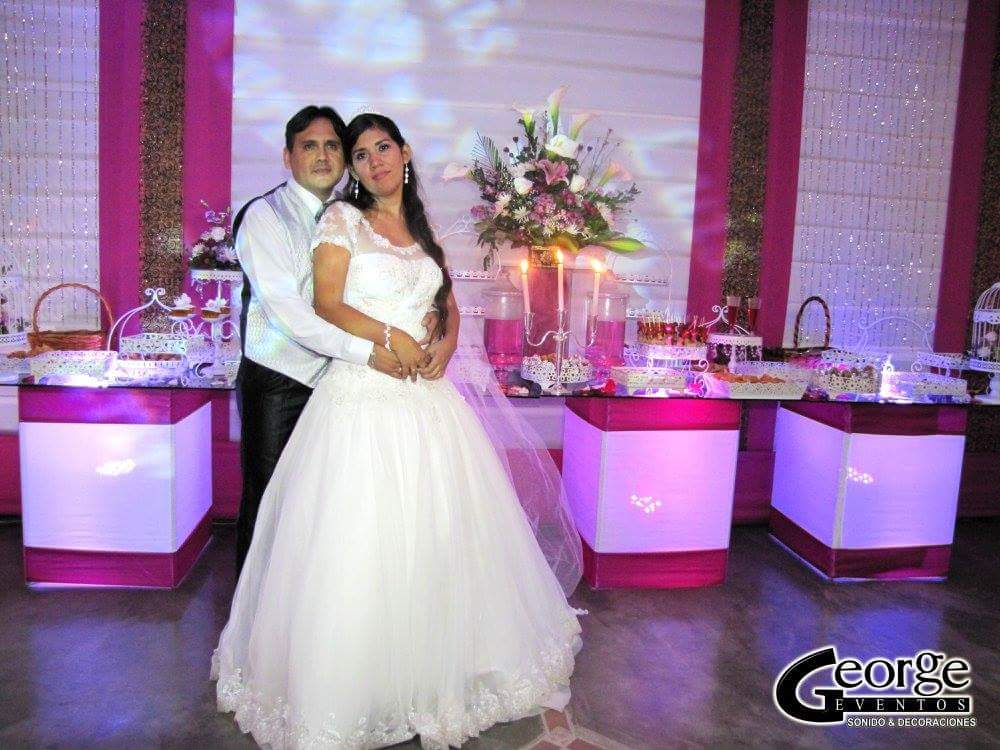
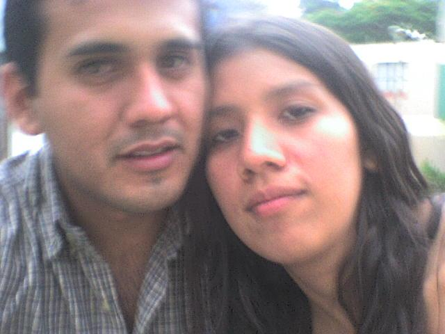

💍
El día que dijimos
“sí, acepto”

Desde aquel 23 de octubre de 2007, mi aventura favorita es compartir la vida contigo. Hoy celebramos 19 años de esta historia.
El 23/10/2007 comenzó nuestra historia de enamorados. No sabía entonces todas las aventuras, risas y momentos hermosos que nos esperaban.
Los dos ingenieros de sistemas, pero nuestro mejor proyecto no vive en una computadora: es la familia que construimos juntos.
Luis, de 8 años; Liam, de 5 años; y Liani, de 2 años: nuestros tres amores y la alegría más grande de esta familia. Gracias por construir este hogar conmigo.
Desde el 23 de octubre de 2007, te volvería a elegir en cada versión de nuestra historia. Gracias por nuestra familia, nuestras aventuras y todo el amor compartido. Te amo hoy y siempre.
El día que dijimos
“sí, acepto”

Nuestros días
de enamorados

Con todo mi amor, siempre 💕
♪ Escuchar nuestra canción